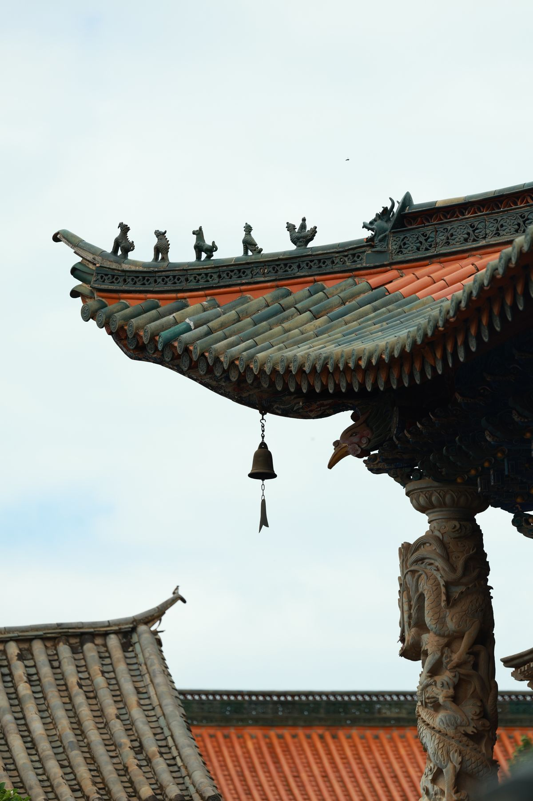
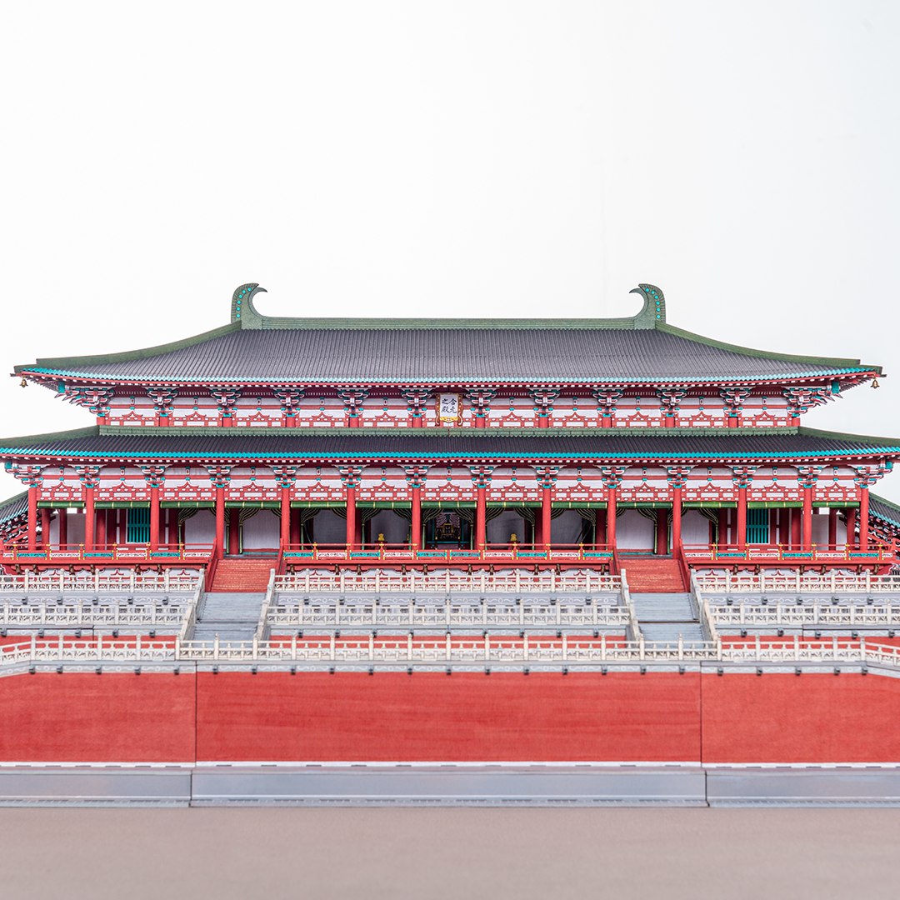
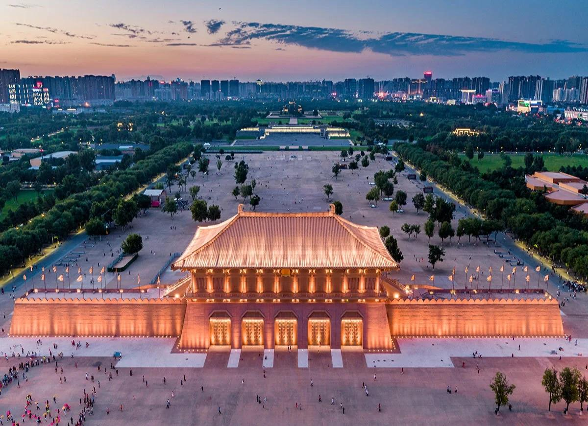
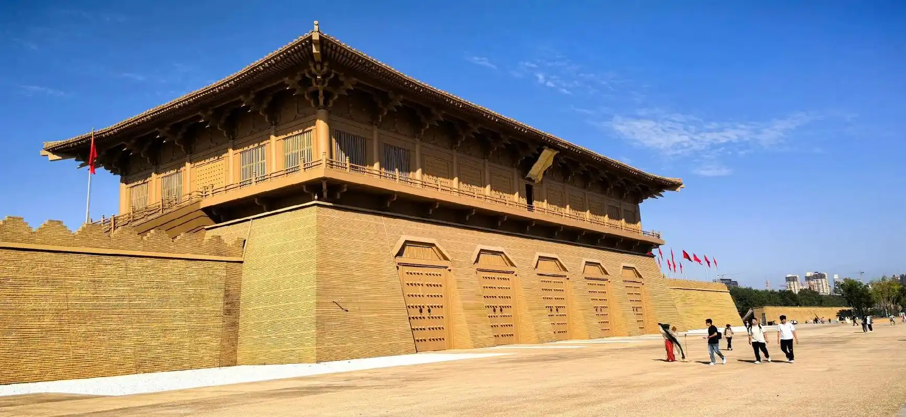
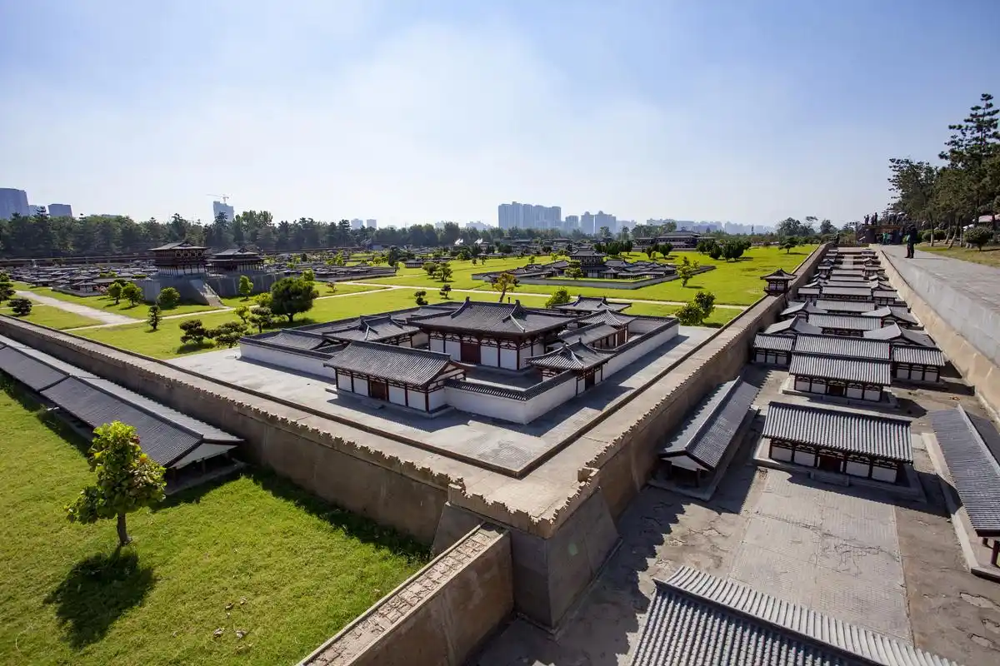

大明宫是中国古代规模最宏大的宫殿建筑群，面积达3.2平方公里，相当于北京故宫的4.5倍、凡尔赛宫的3倍、克里姆林宫的12倍。它不仅是唐王朝近240年间17位皇帝的朝寝之所，更是当时世界上最大的砖木结构建筑群，被誉为"千宫之宫"和"丝绸之路的东方圣殿"。
大明宫的修建始于唐太宗李世民。贞观八年（634年），太宗为太上皇李渊在长安城东北龙首原上兴建避暑行宫"永安宫"，次年改名"大明宫"。但李渊未及入住便已去世，工程暂停。唐高宗李治继位后，因患有风痹症，嫌太极宫低洼潮湿，于龙朔二年（662年）下令大规模续建大明宫，次年完工后正式迁入，从此大明宫取代太极宫，成为唐王朝的政治中心。

含元殿是大明宫的正殿，也是中国历史上最宏伟的单体宫殿建筑。殿基高出地面15.6米，东西宽75.9米，南北深42.3米，面阔十一间。殿前有长达70余米的"龙尾道"，分为中、东、西三阶，百官朝会时拾级而上，宛如登天。登上含元殿向南俯瞰，整个长安城尽收眼底，"九天阊阖开宫殿，万国衣冠拜冕旒"——王维的诗句完美地捕捉了站在含元殿上俯瞰万国来朝的盛唐气象。
含元殿之后是宣政殿（常朝之所）和紫宸殿（内朝及皇帝起居之所），三殿沿中轴线自南向北依次排列，构成了"前朝后寝"的经典格局。大明宫的中轴线布局深刻影响了后世乃至东亚各国的宫殿建筑，日本平城京和平安京的宫城布局即参考了大明宫。
唐末天祐元年（904年），军阀朱温胁迫唐昭宗迁都洛阳，下令拆毁长安城，大明宫在战火中化为废墟，从此湮没于黄土之下长达1100年。1957年，考古工作者在西安城北的龙首原上发现了大明宫遗址。2010年，大明宫国家遗址公园正式建成开放，以"遗址保护+城市公园"的创新模式，让这座沉睡千年的万宫之宫重新呈现在世人面前。
如今的大明宫遗址公园，含元殿的夯土台基依然巍峨，宣政殿和紫宸殿的地基清晰可辨，太液池碧波荡漾。公园通过微缩复原模型、数字化复原展示等方式，让游客在遗址之上"看见"盛唐。这里的一砖一石虽已残破，却比任何重建的宫殿都更有力量——它们是大唐盛世的真迹。
"九天阊阖开宫殿，万国衣冠拜冕旒。" —— 王维《和贾舍人早朝大明宫之作》



| 地址 | 西安市新城区自强东路585号 |
|---|---|
| 开放时间 | 08:30 — 18:00（核心区）；园区全天开放 |
| 门票 | 核心区 60 元；外围园区免费 |
| 交通 | 地铁 4 号线含元殿站 B 口出即达丹凤门 |
| 小贴士 | 园区面积极大（相当于500个足球场），建议租自行车或乘电瓶车游览；丹凤门遗址博物馆和含元殿遗址是必看的两个核心点 |